Set
Set
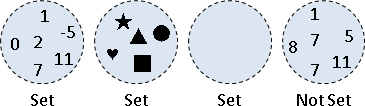set 是指數學名詞「集合」。在這裡我們只考慮元素為整數的集合。集合有幾點特性：
一、空集合。
二、集合中的元素不會重複。
Set 資料結構 :
循序儲存
Array
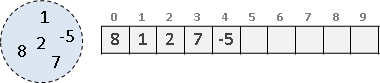要表達一個集合，可以直觀的用一條一維的 int 陣列：將集合裡的所有元素，依序放進陣列中。再用一個變數，記錄元素總數。
如果你對 C++ STL 很熟，用 vector 就更方便了！
然而，以這種資料結構，做聯集、交集、差集之類的運算，則會相當麻煩，也會比較慢。各位可以自己試試看！
可以直接使用 STL 的 set_union() 、 set_intersection() 。
List
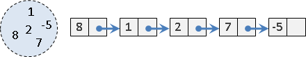原理就和 Array 完全一樣。 Array 是一個一個數字連著放， List 則是一個一個數字連成串。
Binary Search Tree
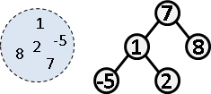只要是可以儲存大量數字的資料結構，都可以用來儲存一個集合。因此二元搜尋樹當然也能勝任這項任務！
可以直接使用 STL 的 set ，不過它沒有聯集、交集、差集等功能，必須自己另外設計程式碼。也許你內心有點芥蒂；沒錯， STL 的 set ，的確是名不符實的 set 。
Set 資料結構 :
索引儲存
Array
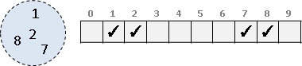另外一種表達集合的方法，是用一條一維的 bool 陣列：集合裡若有 x 這個元素，就讓 array[x] 這個位置為 true ，否則為 false 。
它的壞處就是數值有界限、受陣列大小影響。但是，以這種資料結構，做聯集、交集、差集之類的運算，則會比較快，時間複雜度為 O( 陣列大小 ) 。
Bit Array （ Bit Vector ）（ Bitset ）
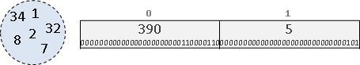還有一種方法，是用 bit 來代替 bool 變數。在電腦當中，一個 bit 只有 0 和 1 兩種值，類似於 bool 變數，兩者都可以用來表示一個集合元素存不存在。利用 bit 們來表達集合，可以節省儲存空間，也可以節省運算時間。
一個 int 變數所使用的記憶體大小為 32bit ，可以當作是 32 個數字的集合。需要更多 bit 的話，就建立一條陣列吧！
可以直接使用 STL 的 bitset 。
UVa 11218
Set 資料結構 :
Hash Table
Hash Function 【這不是資料結構】
int hash( 一筆資料 ) {return 一個數值 ;}
一筆資料重新表示成一個數值。該數值稱作雜湊值。
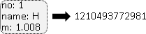資料庫的觀點：資料進行索引，以利管理。密碼學的觀點：資料進行編碼，以求隱蔽。
理想情況是相同資料有著相同雜湊值、相異資料有著相異雜湊值，如此就能直接使用雜湊值來分辨資料。
可以直接使用 STL 的 hash 。
Hashing 【這不是資料結構】
array[ hash( 一筆資料 ) ] = 一筆資料 ;
繁中「雜湊」，簡中「散列」。一筆資料套用 hash function 得到雜湊值，作為陣列索引值，用陣列儲存資料。設計 hash function 時，必須確保雜湊值不會超出陣列邊界。
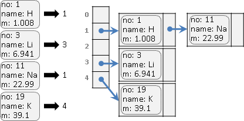無論是相同資料、相異資料，只要有著相同雜湊值，就會儲存到陣列的同一個格子。此時有三種應對方案：
一、每個陣列元素皆改為 List ，串接資料。
二、放到下一格；如果下一格已經使用，就再往下一格。
三、新資料直接覆蓋舊資料。
此處以一為主。插入的時間複雜度是 O(1) 。刪除、搜尋的最佳時間複雜度是 O(1) ，相異資料有著相異雜湊值；最差時間複雜度是 O(N) ，相異資料有著相同雜湊值。
Hash Table
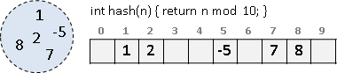當元素的數值範圍很大，甚至元素不是整數，此時可以利用 hash function 得到一個索引值，而不會超出陣列邊界。
數值範圍小，索引儲存是首選，省時間費空間；數值範圍大，循序儲存是首選，省空間費時間。 hash table 兩者兼具，介於中間。
可以直接使用 STL 的 unordered_set 、 unordered_multiset 。
Cuckoo Filter
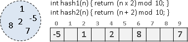建立多個 hash function 。當陣列格子已有資料，就換 hash function 、換雜湊值。
有興趣的讀者，可以自行上網搜尋資料。
Bloom Filter
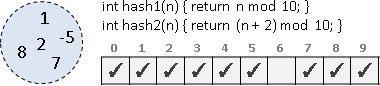套用多個 hash function ，同時儲存於多個欄位，分散風險。只要發現對應欄位幾乎都是 1 ，就推定元素存在於集合當中。缺點是可能製造原本不存在的元素。
如果懶得設計 hash function ，可以用兩個湊出多個： hashᵢ(n) = hash₁(n) + i ⋅ hash₂(n) 。關鍵字 Kirsch-Mitzenmacher 。
有興趣的讀者，可以自行上網搜尋資料。
Disjoint Sets
Disjoint Sets
「互斥集」的意思是一堆集合們，大家擁有的元素都不相同，也就是說這些集合們之間都沒有交集。
A = {1, 3, 7, 8}
B = {4, 5}
C = {2}
A、B、C構成Disjoint sets。
D = {1, 2, 3}
A、B、C、D不是Disjoint sets。
舉例來說，有十個學生，要製作分組報告，分成四組，這四組就是 Disjoint sets 。
甲君、乙君、丙君、丁君、戊君、己君、庚君、辛君、壬君、癸君 共十人，分成了四組： 第一組：甲君、丙君、辛君、壬君 第二組：乙君 第三組：丁君、戊君、己君 第四組：庚君、癸君 這四組構成Disjoint sets。
union 、 find 、 split
由於集合們都沒有交集，因此諸如交集運算、差集運算等等結果很明顯的運算，就不必特別說明。這裡只談 union 、 find 、 split 這三個運算： union 就是將兩個集合做聯集，合併成一個集合。 find 就是找找看一個元素是在哪個集合裡面。 split 就是把一個集合拆成兩個集合。
以下只談 union 、 find ，暫不介紹 split 。
Disjoint Sets 資料結構 :
List
Disjoint-sets List
其原理正是先前介紹的「循序儲存」。
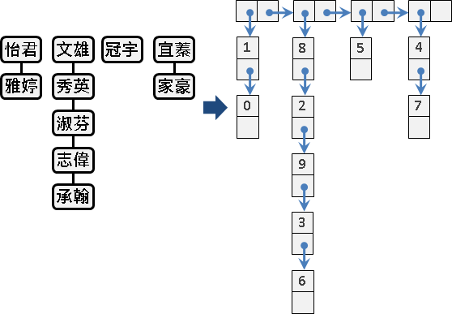Disjoint Sets 資料結構 :
Array
Disjoint-sets Array
其原理正是先前介紹的「索引儲存」。
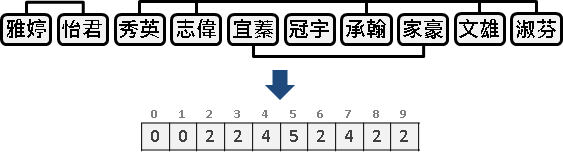讓一條 int 陣列的第 x 格代表第 x 人，格子裡填上這個人所屬的團體編號。若兩個人在同一團體，他們的格子裡就會有相同的團體編號。這是很直觀的方式。
初始化
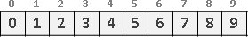一開始大家還沒開始分團的時候，其實可以想做是：每個人都不同團，每個人都是自己一人一團。有個方便的初始值設定方法，就是將第 x 格的值設成 x ，這樣每個人就都是不同團體的了。
Find: 找出一個人在哪一團？
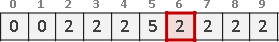直接看團體編號。
Equivalent Relation: 兩個人是否同團？
直接看團體編號。
Union: 兩個人想合併自己所屬團體
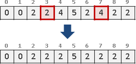現在有兩團想要合併成一團，交涉的人分別是 x 和 y 。 x y 想要合併成一團，只要把所有與 x y 同團的人，都填上同一個團體編號就行了。取 x 和 y 其中一團的團體編號，當作新的團體編號，如此一來就不需要額外的編號了。（這裡我們不考慮有人不服氣的問題。）
Number of Sets: 全部總共幾個團體？
兩團合併成一團後，團體數就會減少一團。只需修改一下 union 的程式碼。
Cardinality of a Set: 一個團體總共幾個人？
一個一個數是差勁的方法：
比較好的方法是：另外建立一條陣列去記錄每個團體的人數吧！陣列第 x 格填入團體編號為 x 的人數。要找出一個團體的人數，就直接從陣列裡面找。
以團體的角度來看：兩團合併成一團後，團體人數就會改變。以人的角度來看：當一個人所屬的團體被改變時，就調整人數。所以只要修改一下 union 的程式碼就可以了。
根據團體的人數多寡來做 union
合併團體時，將小的團體併入大的團體，可以節省一點點設定團體和增減人數所需的時間。
Singleton Set: 團體是否合併過？
自己一個人一組，沒有 union 過。
時間複雜度
union 為 O(N) ， find 、 equivalence 、 cardinality 、 singleton 為 O(1) 。
如果有 N 個人，全部的人都 union 過一遍，每次 union 要花 O(N) 時間，總共花 O(N²) 時間。
空間複雜度
如果有 N 個人，需要一條 N 格的陣列， O(N) 。
Disjoint Sets 資料結構 :
Forest
Disjoint-sets Forest
其原理正是圖論的「有向森林」。
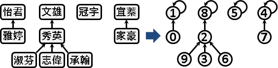讓一條 int 陣列的第 x 格代表第 x 人 ── 不過，格子裡改成填上 x 的老大是誰：
彷彿是老鼠會，以萬流歸宗的方式，來代表這個人是團體的大頭目。團體的所有成員，他們往上追溯之後，都是同一個頭目。一個團體中，只會有一個頭目，由他來支配團體、作為團體的代表。
各位可能會有一個疑問：一個團體之中，每個人都有一個頭目，那麼頭目的老大是誰呢？可以姑且設定成自己。
一個團體就像是一棵分支很複雜的有根樹。這些團體構成了一叢森林，故名 Disjoint-sets Forest 。
初始化
一開始大家還沒開始分團的時候，可以想成是：每個人都不同團，每個人都是自己一人一團，自己當頭目。將第 x 格的值設成 x ，這樣每個人都是不同團體的頭目了。
Find: 找出一個人在哪一團？
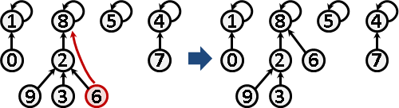接下來談談頭目吧。頭目在一個團體之中扮演舉足輕重的角色，一個團體只會有一個頭目，所以可以用頭目作為一個團體的代表。
find 的時候，可以把途中遇到的所有人，將其老大重設為頭目。如此一來下次 find 的時候就會變快了。
Equivalent Relation: 兩個人是否同團？
同一個團體中的成員，他們的頭目都是同一個人。要看兩個人是不是同一團，看看他們的頭目是不是同一人就行了。
Union: 兩個人想合併自己所屬團體
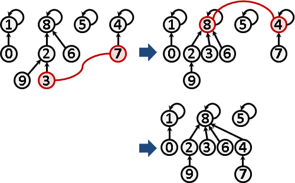合併 x y 兩個團體，重新選出一個頭目。最簡單的方式是：讓 x 的頭目帶著他旗下所有小弟，投靠 y 團體的隨便一個人，如此一來兩個團體就擁有共同的頭目了，也依然保持著老鼠會的架構。
union 的時候，直接投靠對方的頭目，可以讓樹的深度增加最少。如此一來下次 find 的時候就會變快了。
實作小叮嚀： union 要確保投靠的人是頭目，投靠後頭目只有一個。另外也要避免同團體的人互相設定彼此是頭目，否則 find 會無限循環。另外 union 在 C/C++ 當中是關鍵字，必須換個字眼。
Number of Sets: 全部總共幾個團體？
兩團合併成一團後，團體數就會減少一團。只需修改一下 union 的程式碼。
Cardinality of a Set: 一個團體總共幾個人？
先前提到頭目可以支配、代表一個團體，所以把焦點放在頭目上吧。另外建立一個陣列去記錄每個頭目帶領的人數， size[ 頭目 ] = 頭目帶領的人數。
兩團合併成一團後，團體人數就會改變。新頭目吸收人數；舊頭目則不再是頭目，毋須理會他帶領的人數。只需修改一下 union 的程式碼。
根據團體的人數多寡來做 union
union 的時候，讓小的團體併入大的團體，可以讓樹的深度增加最少。如此一來下次 find 的時候就會變快了。
Singleton Set: 團體是否合併過？
自己一個人一組，沒有 union 過。
Empty Set: 空集合
之前我們都未處理空集合。現在我們要改良資料結構，讓它可以處理空集合，而效率仍然保持一樣。
將陣列的第 0 格當作是一個空集合，不代表任何人。總人數如果有 100 人，那麼就要建立 101 格的陣列。第 0 格是空集合，第 1 格到第 100 格，分別代表著 100 個人。
現在既然有了空集合，便可將頭目的老大設定為空集合，更具義理。也就是說，初始化時要將陣列的初始值都改成 0 。
多了空集合，就要另外考慮空集合做聯集時的影響。不管什麼集合，只要和空集合作聯集，集合都不會改變。凡是遇到空集合，就不必做聯集了。
其他部分大致不變，不再贅述。
時間複雜度
union 、 find 、 equivalence 、 cardinality 、 singleton 皆為 O(logN) 。值得一提的是，均攤時間皆是 O(α(N)) ，其中 α(N) 是 Ackermann function f(N,N) 的反函數。
空間複雜度
如果有 N 個人，就需要一條 N 格的陣列，為 O(N) 。